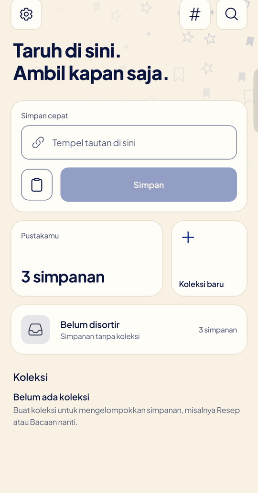
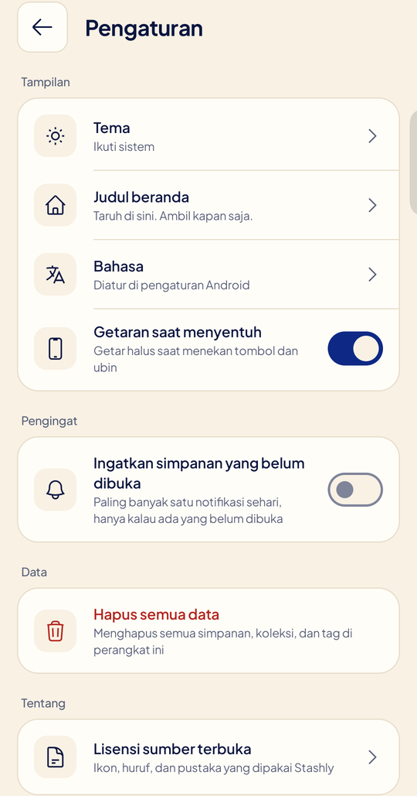

Taruh di sini.
Ambil kapan saja.
Stashly adalah aplikasi Android untuk menyimpan tautan, gambar, dan catatan dari aplikasi mana pun ke satu pustaka pribadi di ponselmu. Tanpa akun, tanpa iklan, tanpa batas simpanan.

Yang bisa dilakukan Stashly
Semua fitur di bawah ini gratis. Tidak ada paket berbayar dan tidak ada batas harian.
Simpan dari aplikasi mana pun
Ketuk Bagikan di Threads, Instagram, TikTok, YouTube, X, atau browser, lalu pilih Stashly. Judul, deskripsi, dan gambar pratinjau diambil otomatis bila situsnya menyediakan.
Tersimpan di ponselmu
Pustaka ada di perangkat, bukan di server kami. Stashly tidak punya server.
Koleksi dan subkoleksi
Kelompokkan simpanan dengan warna dan ikon pilihanmu, lalu urutkan sesukamu.
Catatan berformat
Tambahkan catatan dengan teks tebal, miring, coret, dan daftar pada setiap simpanan. Tandai yang sudah selesai dibaca atau ditonton.
Temukan lagi dengan cepat
Cari berdasarkan judul, situs, isi catatan, atau tag. Saring tautan, gambar, catatan, yang disematkan, atau yang belum selesai.
Pengingat dan Mode Fokus
Minta diingatkan soal satu simpanan pada waktu tertentu, atau tinjau satu per satu simpanan yang belum pernah kamu buka.
Cadangan milikmu sendiri
Sambungkan Google Drive untuk menyimpan salinan pustaka di folder Stashly pada Drive milikmu, atau ekspor ke berkas. Impor dari cadangan Stashly, bookmark browser, Raindrop, dan Pocket.
Terang dan gelap
Ikuti tema sistem atau pilih sendiri di Pengaturan.
Cara kerjanya
Tidak perlu mendaftar. Buka aplikasinya dan langsung simpan.
Bagikan ke Stashly
Dari aplikasi apa pun yang punya tombol Bagikan. Bisa juga menempel tautan langsung di beranda.
Pilih koleksi
Atau biarkan di Belum disortir dan rapikan nanti. Tambahkan tag kalau perlu.
Temukan saat dibutuhkan
Lewat pencarian, koleksi, tag, atau pengingat yang kamu pasang sendiri.

Datamu, kendalimu
- Tanpa akun Stashly. Tidak ada email atau kata sandi yang diminta.
- Tanpa iklan dan tanpa pelacak. Aplikasi tidak mengirim data pemakaian ke siapa pun.
- Pratinjau diambil oleh ponselmu. Saat menyimpan tautan, ponselmu sendiri yang membuka halaman itu untuk membaca judul dan gambarnya.
- Google Drive bersifat pilihan. Stashly hanya bisa melihat berkas yang dibuatnya sendiri di Drive.
- Bisa dihapus kapan saja. Satu tombol di Pengaturan menghapus seluruh data di perangkat.
Tanya jawab
Apakah Stashly gratis?
Ya. Semua fiturnya gratis, tanpa paket berbayar dan tanpa batas jumlah simpanan, gambar, atau koleksi.
Di mana data saya disimpan?
Di ponselmu. Kalau kamu menyambungkan Google Drive, salinannya juga disimpan di folder Stashly pada Drive milikmu sendiri.
Kenapa sebagian simpanan tidak punya gambar?
Beberapa situs, misalnya Instagram, tidak memberikan pratinjau tanpa login. Untuk simpanan seperti itu Stashly menampilkan logo dan warna situsnya, dan kamu bisa memasang gambar sendiri.
Apa yang bisa dilihat Stashly di Google Drive saya?
Hanya berkas yang dibuat Stashly sendiri, yaitu folder Stashly beserta isinya. Berkas lain di Drive tidak bisa dibaca aplikasi ini.
Bagaimana kalau saya ganti ponsel?
Sinkronkan lewat Google Drive di ponsel lama lalu sambungkan akun yang sama di ponsel baru, atau ekspor ke berkas cadangan dan impor di ponsel baru.
Stashly tersedia untuk perangkat apa?
Untuk ponsel Android versi 8.0 ke atas.